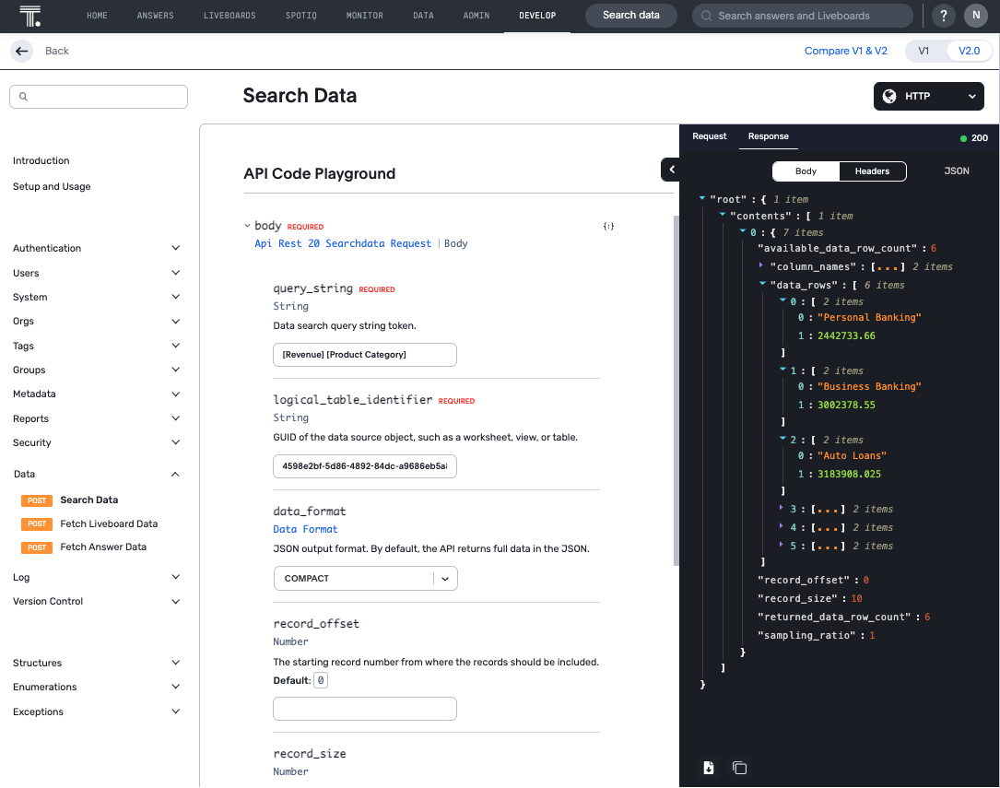
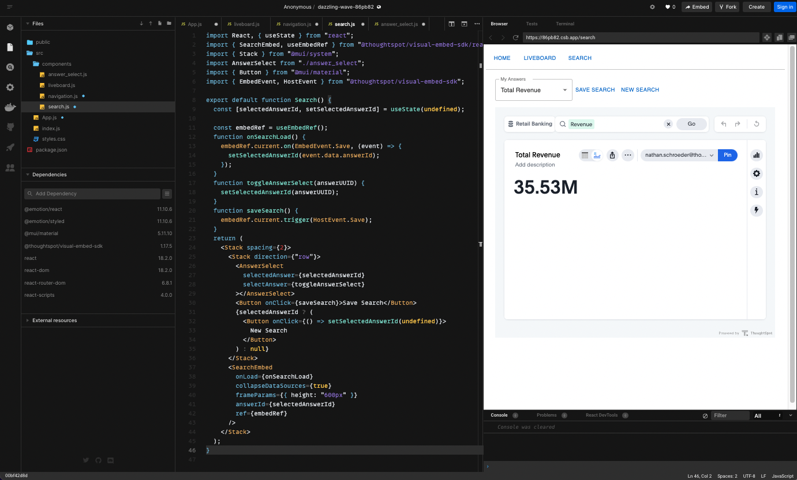

This workshop is designed to introduce developers to ThoughtSpot Everywhere, how to embed analytics into JavaScript-based web applications, and integrate ThoughtSpot into typical devops toolchains. No prior experience, or paid software licenses, is required.
What you will learn
The workshop is broken into 2 parts, with the learning objectives as follows. Each part is intended to build upon the last. You must complete one before moving onto the next.
Part 1: Build with Low Code Developer Tools
- How to create search, visualizations, and liveboards to analyze data
- How to use the developer playground to generate javascript code to embed ThoughtSpot elements into a web app
- How to modify actions available to users and apply hidden runtime filters
Part 2: Embed Analytics with Visual Embed SDK
- How to use the Visual Embed SDK to embed ThoughtSpot components into a ReactJS web app
- Using the platform event framework to interact with embedded components
Bonus: Using Platform APIs and TML
- How to use ThoughtSpot Everywhere APIs and ThoughtSpot Modeling Language to perform typical devops tasks
- Using Postman to manage API collections with ThoughtSpot
Access ThoughtSpot Cloud Environment
To begin, log in to the ThoughtSpot environment. In the previous portion of the workshop you have created a set of liveboards and answers. For this portion of the workshop we will leverage that work to begin embedding visualizations into a custom application
In the previous portion of the workshop you have learned how to use the ThoughtSpot interface to create answers and liveboards. Now, it is time to take advantage of the Developer Playground. The Developer Playground is a visual tool to help to build, test, and iterate on embedded components, prior to adding to your webapp. Unlike traditional approaches to development which require you to read documentation to piece together supported attributes, and configure local environments just to test your solution, the Developer Playground let's you quickly build your embed solution with confidence, greatly reducing time-to-market and avoid syntactical errors.
- Select DEVELOP on the ThoughtSpot top navbar to open the Developer playground.

The Develop area contains 4 sections: Home, Guide, Playground, Customizations.
- Home provides immediate access to overview, 3 methods for embedding Search, Visualizations, and Pinboards, plus 1 method for accessing data via API where you then control how you want to visualize it.
- Guide provides quick access to all of the visual embed commands and Rest API calls.
- Playground provides a cloud-based sandbox environment to generate and test code needed to embed the ThoughtSpot Search experience, Visualizations/Liveboards that you or others on your team create, and the Full ThoughtSpot App (white labeling).
- Customizations provide access to creating custom Actions that can invoke a URL or trigger a callback in your parent application, changing the Styles (look and feel) for app, visualizations, and white labeling, establish Security Settings to configure automatic authentication and query data programmatically with the REST API.Note: Customizations are only available in the paid version of ThoughtSpot and not the free trial.
Embed a Liveboard
Begin the playground experience by embedding the liveboard you created into the sample data app sandbox provided within the Developer Playground .
- Select Liveboard from the Playground menu.
If this is your first time doing this, a Start tour option is shown which will guide you through the steps to select and embed the ThoughtSpot object. For now, select No Thanks. Use the Start Tour button on the nav bar to revisit any time in free trial.
- The ‘Select feature to embed' is already set to Liveboard, select your pinboard and run to view it in the sample app
- Select your Liveboard "Retail Banking Analysis" from the drop-down selection menu and notice that upon choosing the liveboard, the code window on the bottom left automatically highlights the code that you would copy/paste directly into your data app.
- Select ‘ Run to render it in the sample SpotShop data app window.

Modify available actions
There are many actions that can be disabled or hidden for example and all are documented in the Visual Embed guide accessible from the Develop page.
- First, look at the default actions available for a particular embedded component such as a Search or Liveboard item.

- Whilst still in the developer playground, make sure you have the Retail Banking Analysis, then select the Modify available actions checkbox. This will add a code snippet into the editor section.
- Enter "Action.Save" inside the "[]" for the
disabledActionssetting. - Change the "Reason for disabling" to "Premium action, request upgrade." for the
disabledActionReason - Enter "Action.MakeACopy,Action.DownloadAsPdf,Action.AddFilter" inside the "[]" for the
hiddenActionssetting. - Select ‘ Run to render the changes.
- Select the pinboard menu "..." to view the results.
- Hover over Save to see the reason. Notice the other actions specified above are hidden.

You have successfully applied modified actions.
Set runtime filters
Applying run time filters provides additional controls on who can see what data. You may opt for forcing a particular filter based upon the user's role for example, or perhaps you would like to present filter choices in your own data app nav bar and push the selected values that the user selects.
- The current liveboard, Retail Banking Analysis, includes the Total Revenue by Monthly Date chart. This shows a trend of revenue across all product categories. You will apply a run time filter to set the Product Category to Loans so chart only shows the trend for the Loans products.
- Select Set runtime filters under User experience customizations in the playground left pane. Notice the code window again, highlighting the code to be affected.
- Change columnName1 to ‘Product Category' and value1 to ‘Loans'
- Select Run to render the changes.

You can also add multiple runtime filters. Let's add one more filter to show only the data for bags. .
- Copy the runtime filter code and paste it below the existing entry. Make sure you add an additional comma directly after [‘Product Category']
- Modify ‘Product Category' in the 2nd run time filter to Gender and change ‘Loans' to ‘Male'.
- Select ‘ Run to render the changes. Now data is filtered by Loans issued specifically to Males.

Embed a Search
Let's go ahead and use the Developer Playground to embed and customize a search component.
- The ‘Select feature to embed' to Search
- Select your datasource "Retail Banking" from the drop-down selection menu and notice that upon choosing the datasource, the code window on the bottom left automatically highlights the code that you would copy/paste directly into your data app.
- Select ‘ Run to render it in the sample SpotShop data app window.
Note: Search suggestions will automatically appear in the search bar based upon what you did previously.
- Enter in the search bar: Revenue Weekly Product Category
- Then press Enter, Select Go, or click below the search bar to launch the query. While you can change the chart time, keep this one for now.

Note
: As an option you may want to enter some starting search tokens like Sales Region and let the user add more before sending the live query to the cloud data warehouse. Do that in the next task.
There are three search related actions \[Collapse data panel, Hide data panel, Add search tokens\] shown below. You will apply all for this task to create a starting point search and allow the user add more and then initiate the search.
- Select Collapse data panel
- Select Hide data panel
- Select Add search tokens
- Make the following changes to add search tokens, turn off automatic search and test it.
- Enter "[Revenue] [Product Category]" inside the ‘' (single quotes for the searchTokenString setting.
- Change the "true" to "false." for the executeSearch setting.
- Select ‘ Run to render the changes.
- Enter "Monthly" in the search bar and press Go to run the search and voila, user self-service!

Congratulations for making it to the end of Part 1. So far, we have created everything on-platform, using the low-code developer tools. In Part 2, you will build a webapp with a simple hamburger navigation. This app will be written in ReactJS, a very popular JavaScript framework, and use the Visual Embed SDK and ThoughtSpot React components to embed Search, Liveboards, and the full ThoughtSpot app into a webapp.
In part 2, you will build a ReactJS webapp with a simple hamburger navigation, and use the ThoughtSpot Visual Embed SDK to embed live analytics.
To make things easy, we will use CodeSandbox, a web based IDE and runtime environment for building web apps. Using CodeSandbox means we don't need to spend time configuring our local environment for React development. The good news is that ThoughtSpot Everywhere uses the languages and developer processes you already know and love. If you already have your local environment setup for React development, feel free to use that too.
Note: You can also follow along using the completed app running in CodeSandbox. This sandbox app is fully functional, but uses the componentid from another ThoughtSpot instance. To make it work for you, you can substitue your ids, or better still, follow along in the workshop and build it all yourself.
In your browser, go to codesandbox.io and tap the Create a Sandbox button on the top right of the page, then select the React template. This will create a very simple web app, with code on the left, and rendered page on the right. Next, we have to add a few dependencies to our project. Be cafeful to add the correct library as there are a a few similarly named libraries to the ones we need.
- ThoughtSpot Visual Embed SDK
- Type @thoughtspot into the dependency pane, then select the
Visual Embed SDKfrom the autocomplete dropdown.
- Type @thoughtspot into the dependency pane, then select the
- Material UI
- Type @mui/material into the dependecy page and select the corresponding package.
- Type @emotion/react and select
- Type @emotion/styled and select
- React Router Dom
- Type react-router-dom and select
With your dependencies added, let's start by configuring the authentication to ThoughtSpot.
- Replace the contents of your App.js file with:
import React from "react";
import { AuthType, init } from "@thoughtspot/visual-embed-sdk";
var baseURL = "https://cap1slingshot.thoughtspot.cloud/";
init({
thoughtSpotHost: baseURL,
authType: AuthType.None
});
function App() {
return (
<div className="App">
Hello ThoughtSpot!
</div>
);
}
export default App;
You should now see something like the image below:

Create Navigation Component
To navigate around our application, lets create a simple navigation bar. In this example, we are using components from Material UI to help us build something nice looking quickly. First lets create a simple horizontal container, with a button that links refers to the base url /.
- Create a new file in the
componentsfolder called navigation.js. and add the following code:
import { Stack, Button } from "@mui/material";
export default function Navigation(){
return (
<Stack direction={"row"} spacing={2} style={{padding:'10px',borderBottom:'1px solid #cccccc'}}>
<Button href="/">
Home
</Button>
</Stack>
)
}
- Let's go back to the App.js file and import our
Navigationcomponent. At the top of the file, add a new import:
import Navigation from './components/navigation';
- Then, above
Hello ThoughtSpot!add the Navigation component itself:
function App() {
return (
<div className="App">
<Navigation></Navigation>
Hello ThoughtSpot!
</div>
)
}
You should now see the link "Home" and the words "Hello ThoughtSpot!":
Setup React Router.
In the end, we will create components for several different embed types including liveboards and searches. To handle the navigation between these components we will use react router.
- In App.js, add an import for react-router-dom, and Material UI's
TypographyandContainer. This can go below the Navigation import we just added.
import { BrowserRouter, Routes, Route } from 'react-router-dom';
import { Typography, Container } from '@mui/material';
- Let's replace
Hello ThoughtSpot!with a Material UI container, and Routes to each URL we wish to create. In this case we only have the Home page, so we will simply render the wordHome.
function App() {
return (
<div className="App">
<Navigation></Navigation>
<Container style={{height:'calc(100vh - 60px)',overflow:'auto', paddingTop:'25px'}}>
<BrowserRouter>
<Routes>
<Route path="/" element={<Typography>Home</Typography>} />
</Routes>
</BrowserRouter>
</Container>
</div>
)
}
Once complete, your default app and project should look like this:
You will notice that the code includes some logic to authenticate with ThoughtSpot. In this tutorial, we are using AuthType.None. This will prompt the user to log in when the page loads. This is fine for the tutorial, but not recommended for a production app. For a detailed overview of security options supported by the Visual Embed SDK, please check out the online documentation.
Create a Liveboard Page
With the app structure set up and running, the next task is to add a new page to embed a search component.
- Within your IDE, select the
componentsfolder and add a new file liveboard.js.
- Add the required React and Visual SDK import to
liveboard.js.
import React from 'react';
import { LiveboardEmbed } from '@thoughtspot/visual-embed-sdk/react';
- Finally add a liveboard function below your imports. This function will return a snippet of HTML which gets rendered on display. Within this snippet we want to embed our answers component. Previously, in the Developer Playground section, you saw how you generate standard JavaScript code. For your convenience, the Visual Embed SDK also ships with React components. In this example, we will use the LiveboardEmbed component.
export default function Liveboard() {
return (
<LiveboardEmbed
fullHeight={true}
liveboardId={"ef2b8ff9-fabe-4a93-87b5-89896af760c6"}
/>
)
}
Looking at the liveboard embed component, you will see parameters you are already familiar with from the Developer Playground task previously.
Notice that the LiveboardEmbed requires a liveboardId. In this case we have provided a default id. But there are two other ways you can obtain the UUID.
- Search for the livebaord in the Developer Playground and copy the ID from the generated code.
- Navigate to the liveboard in the ThoughtSpot UI and observe the URL. The first UUID is that of the liveboard itself.
We have also specified fullHeight to be true. This means that the liveboard container will automatically expand to the height of the liveboard itself.
Add the component to your application
- Open App.js and add an import for the liveboard component:
import Liveboard from './components/liveboard';
- Next we can add a new Route after
Home, that renders the liveboard on the URL/liveboard:
function App() {
return (
<div className="App">
<Navigation></Navigation>
<Container style={{height:'calc(100vh - 60px)',overflow:'auto', paddingTop:'25px'}}>
<BrowserRouter>
<Routes>
<Route path="/" element={<Typography>Home</Typography>} />
<Route path="/liveboard" element={<Liveboard/>} />
</Routes>
</BrowserRouter>
</Container>
</div>
)
}
Finally, let's add the new route to the navigation bar.
- Open componets/navigation.js and add a new button that links to the URL
liveboard:
export default function Navigation() {
return (
<Stack direction={"row"} spacing={2} style={{ padding: "10px", borderBottom: "1px solid #cccccc" }}>
<Button href="/">Home</Button>
<Button href="/liveboard">
Liveboard
</Button>
</Stack>
);
}
Save everything, and your app will automatically reload on the lefthand side. If everything is completed correctly, you will be presented with the home page as before, but now in the navigation bar you will have an additional link to Liveboard. Tap that link to open the new page. Since this is your first time accessing the page you may be prompted to log into ThoughSpot, do this with the credentials provided. You should now see an embedded liveboard, Good job!
Embedding a Search component is very similar to what you just completed with the Liveboard component. You need to create a new page and add the Search component, then add it to your routes and the navigation menu. Let's jump right in.
Create the Search page
- Add a new file, search.js in the
componentsdirectory, and add the following code:
import React, { useState } from "react";
import {SearchEmbed, useEmbedRef} from "@thoughtspot/visual-embed-sdk/react";
import { Stack } from "@mui/system";
export default function Search() {
return (
<Stack spacing={2}>
<SearchEmbed
collapseDataSources={true}
frameParams={{ height: "600px" }}
/>
</Stack>
);
}
The syntax for this looks very similar to the liveboard component, but in this case we are using the SearchEmbed, with a few new parameters.
We have hardcoded the search height to be 600px, and we have specified collapseDataSources to be true. This means that the typical left-hand Data panel where you can select columns via clicking, is collapsed by default. This is one of the many options we can pass to control the look and behavior of the embedded object.
Add Search Route
- Open App.js and import the Search component after the Liveboard import:
import Search from './components/search';
- Add the function to the
Routeselement after the Search route:
<Route path="/search" element={<Search />} />
Add Search to the navigation menu
- Open components/navigation.js and add a button to the search route, after the liveboard navigation item:
export default function Navigation() {
return (
<Stack direction={"row"} spacing={2} style={{ padding: "10px", borderBottom: "1px solid #cccccc" }}>
<Button href="/">Home</Button>
<Button href="/liveboard">
Liveboard
</Button>
<Button href="/search">
Search
</Button>
</Stack>
);
}
- Click on the new navigation link to test the search embed, and give a simple search a shot:
- "Revenue monthly Product Category"
Your result should look like the screenshot below:
The next thing we will try to do is to create a list of all Answers available to the user. Up until this point we have been leveraging the Visual Embed SDK. This next step will require that we use the ThoughtSpot REST API.
Before we implement the call we need, let's take a second to explore the REST API, as this task is just one of the many tasks that the APIs can be used for, including:
- Controlling users and permissions
- Retrieving login tokens
- Querying data
- Querying content
- Version control
The best place to quickly explore the other REST APIs available to us, is in the ThoughtSpot UI.
- Navigate to the Rest API V2 playground in the ThoughtSpot UI's Develop page. https://cap1slingshot.thoughtspot.cloud/#/develop/api/rest/playgroundV2_0
- Take a second to explore the various calls availbe to us.
- Click on the API call called
Search Dataunder theDatasection. This endpoint can be used to retrieve the result of a search query in JSON format. This requires three variables.
- Set the
query_stringequal to [Revenue] [Product Category] - Set the
logical_table_identifierto 4598e2bf-5d86-4892-84dc-a9686eb5a8ac. This is the ID of our Retail Banking worksheet. - Set the
data_formatto Compact
- Click Try it Out in the bottom right hand corner and explore the resulting dataset.
You should see something like this:

Searching by itself is great, but you will also want to save and re-visit your searches later. A saved search is called an Answer and we can load answers using the same search component we just created by specifying an answerId. As we did with the liveboard, we could find a hardcoded ID through the developer playground. But in this case we want to make it more dynamic, so let's create a new select component that will allow a user to choose from a list of all of the answers that they have saved.
Create an AnswerSelect component
Coming back to our original goal of creating a select menu that contains a list of all answers the user created. To do this we will need to query the metadata within ThoughtSpot.
In this example we will leverage the V1 API's metadata/list: https://developers.thoughtspot.com/docs/?pageid=metadata-api#metadata-list
The equivialant call in V2 can be found here: https://developers.thoughtspot.com/docs/?pageid=rest-apiv2-reference#_metadata
- First, create a new file in the
componentsfolder called answer_select.js, and add the following code:
import { FormControl, InputLabel, MenuItem, Select } from "@mui/material"
import { useEffect,useState } from "react"
export default function AnswerSelect(props){
const {
selectedAnswer,
selectAnswer
} = props
const [answers,setAnswers] = useState([])
useEffect(()=>{
var baseURL = "https://cap1slingshot.thoughtspot.cloud/"
fetch(baseURL+"callosum/v1/tspublic/v1/metadata/list?type=QUESTION_ANSWER_BOOK&category=MY",
{
credentials: 'include',
})
.then(response => response.json())
.then(data => {
if (data.headers){
setAnswers(data.headers)
}
})
},[selectedAnswer])
return (
<FormControl>
<InputLabel id="demo-simple-select-label">My Answers</InputLabel>
<Select
style={{width:'200px'}}
label="Select Answer"
value={selectedAnswer ? selectedAnswer : ''}
onChange={(e)=>selectAnswer(e.target.value)}
>
{answers.map((answer)=>{
return <MenuItem value={answer.id}>{answer.name}</MenuItem>
})}
</Select>
</FormControl>
)
}
Let's take a look at what this does. First, this component is based on the Material UI Select component, which simply requires a list of MenuItem objects, much like a standard select input. To obtain this list we are are making a fetch call in the components useEffect function.
The key to note here is the use of credentials: 'include'. Since we have already logged into ThoughtSpot, the session is able to be maintained in the browser. When we send the REST API call to ThoughtSpot we simply need to ensure that the Browser authentication comes along with, and ThoughtSpot will be able to use this authenticate oure user automatically.
Because category is set to MY, ThoughtSpot will look at the authenticated sesison and only return the list of Answer objects available to the user.
To store the list of available answers, we are using a state object of the array type called answers: const [answers,setAnswers] = useState([])
Finally we map a list of Menu Items into the Select component, setting the value equal to the answer's Id and the display equal to the answer's Name.
Add AnswerSelect to the Search Page
- Navigate to the components/search.js file.
- Add the import for the AnswerSelect component.
import AnswerSelect from "./answer_select";
import { Stack } from "@mui/system";
- Add a new state object called
selectedAnswerId. You can add this right aboveconst embedRef.
const [selectedAnswerId, setSelectedAnswerId] = useState(undefined)
- Create a function to update the selected answer given an answer Id. This will be used by the answer select we just created, and can be placed below the
const embedRef
function toggleAnswerSelect(answerUUID){
setSelectedAnswerId(answerUUID)
}
- Insert the AnswerSelect component. In this case we will create a horizontal menu of buttons using a Material UI Stack. Place this on top of the
SearchEmbed
<Stack direction={"row"}>
<AnswerSelect
selectAnswer={toggleAnswerSelect}
selectedAnswer={selectedAnswerId}
></AnswerSelect>
</Stack>
- Update the
SearchEmbedto refer to the currently selected answerId.
<SearchEmbed
collapseDataSources={true}
frameParams={{ height: "600px" }}
answerId={selectedAnswerId}
ref={embedRef}
/>
Finally, let's add a button to reset the answerId for a brand new search.
- Add an import for Material UI Button.
import { Button } from "@mui/material";
- Below the
AnswerSelectcomponent, add a new Button that when clicked sets theselectedAnswerIdto undefined.
<Button onClick={()=>setSelectedAnswerId(undefined)}>
New Search
</Button>
Your final code should look like the following:
import React, { useState } from "react";
import { SearchEmbed, useEmbedRef } from "@thoughtspot/visual-embed-sdk/react";
import { Stack } from "@mui/system";
import AnswerSelect from "./answer_select";
import { Button } from "@mui/material";
export default function Search() {
const [selectedAnswerId, setSelectedAnswerId] = useState(undefined)
const embedRef = useEmbedRef();
function toggleAnswerSelect(answerUUID){
setSelectedAnswerId(answerUUID)
}
return (
<Stack spacing={2}>
<Stack direction={"row"}>
<AnswerSelect
selectAnswer={toggleAnswerSelect}
selectedAnswer={selectedAnswerId}
></AnswerSelect>
<Button onClick={()=>setSelectedAnswerId(undefined)}>
New Search
</Button>
</Stack>
<SearchEmbed
collapseDataSources={true}
frameParams={{ height: "600px" }}
answerId={selectedAnswerId}
ref={embedRef}
/>
</Stack>
);
}
The resulting application should now look something like this:

ThoughtSpot Everywhere makes it easy to embed analytics into any webapp via the Visual Embed SDK. In addition to embedding components, the SDK also provides support for analytics lifecycle events such as when a search term has changed, new data is loaded, or a component is rendered on the page. In this tutorial, you will learn the different types of lifecycle events and how to utilize them to make more dynamic interactions. You will use the app you just created and extend it to support lifecycle events
Event Types
Lifecycle events fall into two categories:
EmbedEvents
EmbedEvents occur when the state of a component changes or is interacted with. This may be something like the component is rendered, new data is loaded, or a user clicks on a visualization
HostEvents
HostEvents are hooks to allow the developer to programmatically change or update an embedded component. For example, you may want to change the search term used, or enable/disable features
Currently our list of answers shows us everything available to the user as of the time it was loaded. But what happens when a user wants to save one of their new searches?
Give it a shot:
- Click "New Search"
- Type Revenue Product Category into the search
- Click the three dots icon and select
Save - Give it a good name and finish saving.
Notice that the list has not updated. If you refresh the page, you will see that the changes are finally picked up. This is because of the way that state works in React. To make this work as we expect, we can listen for the Save event to occur inside of the embed, using EmbedEvent.Save
- First import the EmbedEvent enum from the ThoughtSpot SDK:
import { EmbedEvent } from "@thoughtspot/visual-embed-sdk";
- Add a new function called
onSearchLoad. Because we are using React, we need to use the embedRef to add listeners and trigger events. In this case we are listening for theEmbedEvent.Save, which will fire when the user finishes saving the search. To make this even more convenient for us, ThoughtSpot includes the newly savedanswerIdin the event data, which we can use to update theselectedAnswerId.
function onSearchLoad(){
embedRef.current.on(EmbedEvent.Save, (event)=>{
setSelectedAnswerId(event.data.answerId)
})
}
- Add new parameter to the SearchEmbed to call this function:
<SearchEmbed
onLoad={onSearchLoad}
collapseDataSources={true}
frameParams={{ height: "600px" }}
answerId={selectedAnswerId}
ref={embedRef}
/>
Your final code should look like this:
import React, { useState } from "react";
import { SearchEmbed, useEmbedRef } from "@thoughtspot/visual-embed-sdk/react";
import { Stack } from "@mui/system";
import AnswerSelect from "./answer_select";
import { Button } from "@mui/material";
import { EmbedEvent } from "@thoughtspot/visual-embed-sdk";
export default function Search() {
const [selectedAnswerId, setSelectedAnswerId] = useState(undefined)
const embedRef = useEmbedRef();
function onSearchLoad(){
embedRef.current.on(EmbedEvent.Save, (event)=>{
setSelectedAnswerId(event.data.answerId)
})
}
function toggleAnswerSelect(answerUUID){
setSelectedAnswerId(answerUUID)
}
return (
<Stack spacing={2}>
<Stack direction={"row"}>
<AnswerSelect
selectedAnswer={selectedAnswerId}
selectAnswer={toggleAnswerSelect}
></AnswerSelect>
<Button onClick={()=>setSelectedAnswerId(undefined)}>
New Search
</Button>
</Stack>
<SearchEmbed
onLoad={onSearchLoad}
collapseDataSources={true}
frameParams={{ height: "600px" }}
answerId={selectedAnswerId}
ref={embedRef}
/>
</Stack>
);
}
- Give it a shot! Try to create a new search and save. Your menu should update instantly to the newly saved report name.
We now know when a save has been triggered, so let's do the opposite.
Let's create a button that kicks off the save process.
Triggering the Save Event
- First, in components/search.js update the import to include the HostEvent enum.
import { EmbedEvent, HostEvent } from "@thoughtspot/visual-embed-sdk";
- Next, add a function that triggers the
HostEvent.Save:
function saveSearch(){
embedRef.current.trigger(HostEvent.Save)
}
Instead of simply adding the Button, let's take this a step further and conditionally render Buttons based on whether the user is creating a new search or is looking at an existing Answer. Currently we know this by the selectedAnswerId. If this is undefined, then the only action that makes sense is to Save. If this has a value, then the user is looking at an existing answer New Search will be more relevant.
- Replace the New Search button with the following code:
<Button onClick={saveSearch}>
Save Search
</Button>
{selectedAnswerId ? (
<Button onClick={() => setSelectedAnswerId(undefined)}>
New Search
</Button>
) : null}
- Give it a shot! When you are viewing an existing Answer, the Save button will update the answer. When you click "New Search" and start fresh, the save button will create a brand new Answer.
Your final code should look like this:
import React, { useState } from "react";
import { SearchEmbed, useEmbedRef } from "@thoughtspot/visual-embed-sdk/react";
import { Stack } from "@mui/system";
import AnswerSelect from "./answer_select";
import { Button } from "@mui/material";
import { EmbedEvent, HostEvent } from "@thoughtspot/visual-embed-sdk";
export default function Search() {
const [selectedAnswerId, setSelectedAnswerId] = useState(undefined);
const embedRef = useEmbedRef();
function onSearchLoad() {
embedRef.current.on(EmbedEvent.Save, (event) => {
setSelectedAnswerId(event.data.answerId);
});
}
function toggleAnswerSelect(answerUUID) {
setSelectedAnswerId(answerUUID);
}
function saveSearch() {
embedRef.current.trigger(HostEvent.Save);
}
return (
<Stack spacing={2}>
<Stack direction={"row"}>
<AnswerSelect
selectedAnswer={selectedAnswerId}
selectAnswer={toggleAnswerSelect}
></AnswerSelect>
<Button onClick={saveSearch}>Save Search</Button>
{selectedAnswerId ? (
<Button onClick={() => setSelectedAnswerId(undefined)}>
New Search
</Button>
) : null}
</Stack>
<SearchEmbed
onLoad={onSearchLoad}
collapseDataSources={true}
frameParams={{ height: "600px" }}
answerId={selectedAnswerId}
ref={embedRef}
/>
</Stack>
);
}
Your application should now look like this (if you are viewing an existing Answer):

Our application works as we expect, but it doesnt quite match the look and feel we want.
To get this looking a bit better we will adjust the sytling both of the application we just created, as well as the ThoughtSpot Embeds.
Let's start with the application.
Add a logo
A website doesn't feel quite right without a Logo.
- Right click and save the image below to your local computer.

- Drag and Drop this into the
/publicdirectory of the IDE file explorer

- Open the components/navigation.js file and add it as an image before the other links.
<img height="50px" alt="Logo" src="/Capital-One-Logo.png"></img>
Adjust the Material UI Theme
Material UI allows us to control things like button color through a Theme object.
- In your App.js file copy the following code after the last import:
import { createTheme, ThemeProvider } from '@mui/material/styles';
const theme = createTheme({
palette: {
primary: {
light: "#396d92",
main: "#016faa",
dark: "#396d92",
contrastText: "#fff"
},
secondary: {
light: "#da5853",
main: "#016faa",
dark: "#92201c",
contrastText: "#fff"
}
}
});
- In the
Appfunction, wrap everything we have done in a theme provider, using the theme we just created:
function App() {
return (
<div className="App">
<ThemeProvider theme={theme}>
<Navigation></Navigation>
<Container
style={{
height: "calc(100vh - 60px)",
overflow: "auto",
paddingTop: "25px"
}}
>
<BrowserRouter>
<Routes>
<Route path="/" element={<Typography>Home</Typography>} />
<Route path="/liveboard" element={<Liveboard />} />
<Route path="/search" element={<Search />} />
</Routes>
</BrowserRouter>
</Container>
</ThemeProvider>
</div>
);
}
Let's make the ThoughtSpot embeds match the rest of our page a bit better. We can do this by adjusting CSS.
CSS can be provided both at a global level, through the init function, or provided within the Embed objects themselves such as SearchEmbed and LiveboardEmbed for more specific individual styling.
This is done by providing a customizations object, that contains CSS variable overrides or a link to a CSS file.
customizations: {
style: {
customCSSUrl: "cdn.jsdelivr.net/gh/thoughtspot/custom-css-demo/css-variables.css",
customCSS: {
variables: {
"--ts-var-button--primary-background": "#016faa",
},
}
}
}
Going into a bit more detail on each of the override mechanisms:
CSS Variables
To override large portions of the application quickly and easily, ThoughtSpot provides 70+ CSS variables that can be overriden. In this example we are overriding the primary button background color:
"--ts-var-button--primary-background": "#016faa"
Custom CSS File
It is also possible to reference a hosted CSS file that will be loaded with the ThoughtSpot emnbed and can similarily override variables and other rules. Typically this would reside on the application server. Note that this URL will need to be whitelisted by the ThoughtSpot server.
customCSSUrl: "cdn.jsdelivr.net/gh/thoughtspot/custom-css-demo/css-variables.css",
CSS Rules
For anything beyond what is currently possible with variables, you can provide specific rules. It is recommend that you use this sparingly, as individual classes are more subject to change than the well maintained variables. In this example we are adjusting the padding around the search component:
".answer-module__answer": { padding: "2px" }
Documentation
Feel free to explore the documentation on CSS: CSS Documentation
As a simple starting example of what is possible, we have overriden a few specific variables in ThoughtSpot to make the embeds look more like the rest of our styled site.
- In the App.js file, find the ThoughtSpot
initfunction, and replace it with the following code.
init({
thoughtSpotHost: baseURL,
authType: AuthType.None,
customizations: {
style: {
customCSS: {
variables: {
"--ts-var-button--primary-background": "#016faa",
"--ts-var-button--secondary-color": "#454545",
"--ts-var-root-background": "#ffffff",
"--ts-var-viz-border-radius": "2px",
"--ts-var-vis-box-shadow": "0px 0px 4px #f2f2f2",
"--ts-var-button-border-radius": "5px"
},
rules_UNSTABLE: {
".answer-module__answer": { padding: "2px" },
".answer-module__searchCurtain": { "background-color": "transparent" }
}
}
}
}
});

At this stage, you've completed your app and should have a great understanding of how you can use the Visual Embed SDK. Great job!
Check out the completed app and compare your code.
Congratulations. You have completed the ThoughtSpot Developer Workshop. Thoughout the workshop, you've created an instance of ThoughtSpot, complete with sample visualizations to find insight from business data, and built an entire web app to embed these components using the developer tools and SDKs provided by ThoughtSpot Everywhere.
We've only scratched the surface of the features available to developers with ThoughtSpot Everywhere. To keep learning more, the following guides are a great starting point:
- Setting up your local development environment.
- An overview of authentication and security settings.
- Using custom actions
- Working with the REST API